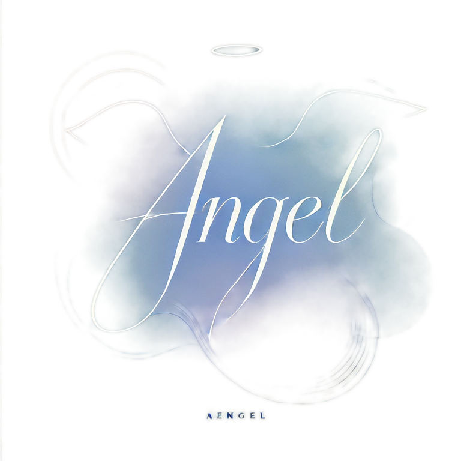

← 回工具箱CVSS（Common Vulnerability Scoring System、通用弱點評分系統）Base Score 計算、支援 3.1 與 4.0 兩版。
還有 8 個欄位未選。
CVSS 是「嚴重度」不是「風險」。Base Score 描述弱點本身的技術嚴重程度、不含「你的環境裡這台主機放什麼資料、有沒有暴露在外」。實務上排修補順序、要把資產重要性與暴露程度納進來——同一個 9.8 分、在隔離測試機和對外網站上的處理優先序完全不同。
4.0 比 3.1 多了什麼？把「受攻擊系統」與「後續系統」的衝擊分開評（VC/VI/VA vs SC/SI/SA）、新增攻擊前提條件（AT）、使用者互動細分成被動／主動。3.1 的「Scope」概念在 4.0 被後續系統衝擊取代、評得更精確。
給管理層報告時、建議帶分級（重大／高／中／低）而非裸分數、並附上「在我們環境的實際可利用性」一句話判斷——這比報「CVSS 9.8」更能支撐決策。